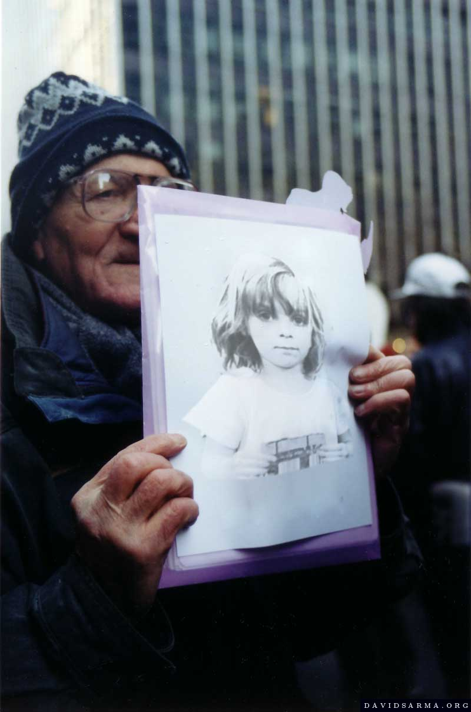
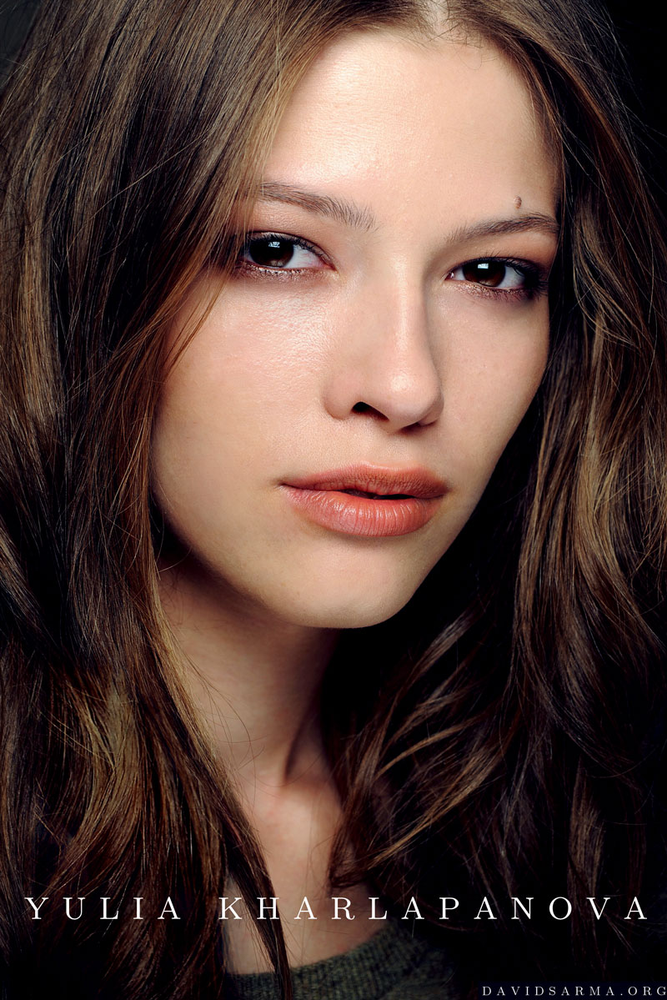

Compositing | Creative Retouching

- 
- Facility: Davidsarma.org|Visual Arts Gallery
- Date: 1.2006
- Role: Photography, Compositing, Retouching.
- Notes: This is an art piece displayed at the Visual Arts Gallery. I was responsible for all aspects of concept and implementation.
- Software: Photoshop.
Fashion Retouching
- 


- Facility: Various
- Date: 4.2009
- Role: Photo retouching, Post-production workflow.
- Notes: I am interested in developing tools which introduce techniques of visual effects to the problems of retouching, for example addressing the problems of feature extraction in the treatment of skin texture, or in extracting useful information from images not specifically intended for use in design settings. Techniques of computer vision and the study of natural image statistics can be adapted to retouching settings through the use of visual effects software, with the result of speeding up typical tasks, or making possible what would otherwise be difficult to accomplish.
- Software: Photoshop, Nuke; Mathematica.